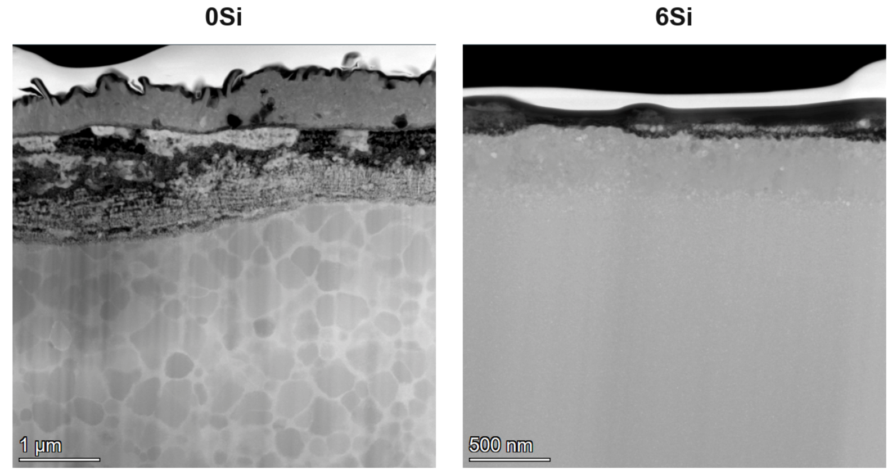

Overview
The goal behind this project is to build an electronic component that can survive on the surface of Venus where temperatures reach 500°C, a temperature where standard materials fail to function. Our team created and tested over 90 new metal alloys, looking for ones that stay magnetically stable at extreme temperatures. We melted and rapidly cooled these alloys into thin ribbons, then studied how their internal structure changes as temperature rises. For the most promising alloys we used special annealing treatments to tune their magnetic properties. This resulted in alloys that could function at the desired temperature for over 21 days.
Technical description
Over 90 new alloy compositions were designed and manufactured through melt spinning to increase primary crystallization temperature, secondary crystallization temperature, and amorphous curie temperature. Microstructural evolution during thermal exposure was characterized through isothermal annealing studies, DSC, x-ray diffraction for phase identification, and TEM for nanocrystalline grain size and distribution.
Once an alloy composition was optimized strain and field annealing is used to produce large induced magnetic anisotropies, reducing the need for gapping of the inductor in end use. Extensive corrosion and oxidation studies, conducted under simulated Venus atmosphere conditions at NASA Glenn's Extreme Environment Rig (GEER), evaluated the coupled effects of high-temperature exposure and corrosive/oxidizing atmosphere on both magnetic properties and microstructural stability, addressing a previously uncharacterized failure mode for these materials in extreme planetary environments


Why it matters
- Newly designed alloys achieve amorphous Curie temperatures and crystallization stability at levels never before demonstrated at 1kHz, opening up a temperature range where no soft magnetic material has reliably operated before.
- Induced magnetic anisotropy from strain/field annealing removes the need for air-gapped cores in high-temperature inductor designs.
Key publications
- Lauren’s was submitted and will be published in spring
- Y. Wang, A. Leary, J. Baltrus, and P. Ohodnicki, “Crystallization, Corrosion, and Magnetic Properties of Soft Magnetic Nanocomposite Co75.4Fe2.3Mn2.3Si2Nb4B14 Alloy for Elevated Temperature Operation,” JOM, vol. 76, no. 9, pp. 4998–5013, 2024, doi: 10.1007/s11837-024-06705-0. https://link.springer.com/article/10.1007/s11837-024-06705-0
- T. Paplham, Y. Wang, A. Leary, and P. Ohodnicki, “Extreme temperature stability of induced magnetic anisotropies in Co-rich soft magnetic nanocrystalline ribbon,” Journal of Magnetism and Magnetic Materials, 639, 2026,https://doi.org/10.1016/j.jmmm.2025.173760.
NASA High Operating Temperature Technology (HOTTech) program under Grant #80NSSC22K0415